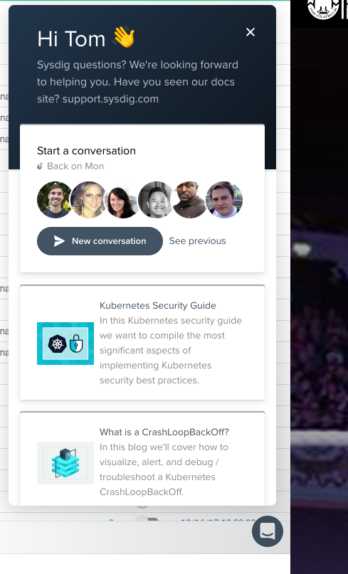

Get Help | Using Sysdig Support
Sysdig provides a rich variety of support and help options to users.
Click the icon in the Sysdig Monitor or Sysdig Secure UI to access them.
 |
Self-Help: Walkthroughs and Training Sessions provide self-help options.
Contact Support: The Support Website link allows you to contact support and submit a ticket.
This section includes:
Self-Help
This page describes the tools Sysdig offers to help its users solve potential issues on their own.
This section describes:
Documentation (Support Website)
Access Self-Help Tools
Click the icon in the Sysdig Monitor UI to access the self-help tools (boxed in green, below).
Try these before reaching out to Support.
 |
Documentation (Support Website)
When in doubt, check the user guides first.
Within the Sysdig Monitor  menu, click
menu, click Support Website to reach a landing page for each of the documentation sets, as well as a link to submit a support ticket.
Walkthroughs
Sysdig Monitor has several built-in walkthroughs available to acquaint users with the interface and to get started creating dashboards and alerts.
Click Walkthroughs to access them from within the Sysdig Monitor menu.
The current walkthroughs include:
Dashboards Overview
Alerts In-Depth
Dashboards In-Depth
Explore Overview
Training Sessions
Sysdig provides regular training webinars to assist new and experienced users with Sysdig products. To review and sign up for upcoming training sessions:
Click the
Information(question mark) icon in the management section of the left-hand sidebar:
Select
Training Sessionto open the webinar list in a new browser tab.
Support Chat
Sysdig Monitor users can access chat support with Sysdig employees through the web interface.
To access the chat function:
Click the
Chat(message bubble) icon in the bottom right corner of the Sysdig Monitor interface: Click the
New conversationbutton to start a new chat, or theSee previouslink to review previous chat logs.
Troubleshooting Tips
Before calling Sysdig support, check for agent connectivity problems yourself, using on the tips on this page.
Problem: A host is not showing up in the user interface
Problem: You see "Error, connection_manager: Lost connection" messages in the agent's log file.
Possible Cause: Suspect agent connectivity problems and troubleshoot for those.
Note
The agent log file is located at /opt/draios/logs/draios.log.
Perform the following checks and see if it solves your problem:
Documentation (Support Website)
Check Licenses
Confirm that you have not used all available agent licenses.
The agent license count is available in the Settings > Subscription tab. Administrators can purchase additional agent licenses from that tab if needed.
Check Firewall
Confirm basic connectivity through your firewall:
ping collector.sysdigcloud.com
Check Ports
Confirm the correct port is open through your firewall:
telnet collector.sysdigcloud.com 6443
Note
In earlier versions, the Sysdig Agent connected to port 6666. This behavior has been deprecated, as the Sysdig agent now connects to port 6443.
Check MAC Addresses
Check for duplicate MAC addresses in your hosts.
When the agent starts, an entry in the /opt/draios/logs/draios.log file reports the host's MAC:
2016-09-26 10:20:25.982, 2363, Information, machine id: a2:11:0b:84:11:21 Compare the logged MAC address to any existing reporting agents in the Explore tab using the Hosts & Containers hierarchy.
Check Access Key
Go to Settings > Agent Install to see the access key and confirm it is correct.
Note
The Sysdig agent key is configured in the agent config file ( opt/draios/etc/dragent.yaml ). See also Understanding the Agent Config Files.
Upgrade the Sysdig Agent
The agent is routinely updated to include new features and resolve bugs. Many times problems can be resolved by simply upgrading your Sysdig agent.
If Self-Help Fails
If you still experience issues, Contact Support.
Contact Support
If troubleshooting and documentation haven't helped, Contact Support .
Contents
Submit a Support Ticket
Provide essential details on your ticket for Sysdig support to help resolve your issues.
| Closeup of Description Field with Sample Account Info |

Ticket Details to Include
Add details in the Description box (see below for tips on what to enter):
Operating System: Orchestrator: Agent Version: Company Name:
Review Host Requirements for Agent Installation to confirm that your operating system is supported.
Submitting the output of uname -a and lsb_release -a will help Sysdig support determine if the kernel is supported.
If you have a custom kernel and the kernel development headers are not available, you will not be able to install our agent.
Also note if the Linux distribution used inside your application's container is not the same as the host.
Note
lsb_release is part of a software package called the LSB core, which is not necessarily installed on your system by default. If it is not installed, see https://wiki.itcollege.ee/index.php/Lsb_release.
When using the Sysdig agent in an orchestration infrastructure (Kubernetes, GKE, Mesos, etc.), submit the details of how the the infrastructure was installed.
For example:
Which Kubernetes version
The cloud provider being run under (AWS, GKE, etc)
The number of nodes
The authentication method configured for the API server
To verify which agent version you are running, either:
Use the following command:
Non-Container agent:
/opt/draios/bin/dragent --version
Container agent:
~$ sudo docker exec -it <container_id> /opt/draios/bin/dragent --version
or
Check the Sysdig Monitor UI, by applying the
Host & Containers > Sysdig Agent Summaryview in theExploretab.
Known issues may be resolved by upgrading to the latest agent version.
Agent release numbers are shown in the agent build list, and agent release notes can be accessed from the Release Notes landing page.
See also: Agent Upgrade.
Adding Files
If basic ticket information is insufficient to resolve the issue, a Sysdig support engineer may ask you to upload additional log files or support bundles.
The following sections describe how to collect and deliver them to Sysdig support.
File Upload Tips
Attach files rather than cutting/pasting logs or config files into the email body. Important formatting will be preserved.
Compress large files before attaching. Files over 20MB will require Sysdig support to supply you with a download link.
Include the host name the files came from.
Add Agent Files
Sysdig support may request additional files related to the agents.
After generating the files, add them to the Support ticket you created. Review the File Upload Tips.
Contents
Many agent connection problems are due to transcription errors in the agent start command or manifest files.
This is especially true with truncated access keys and when using the Additional_Conf parameter in a container agent installation. Always cut and paste and then modify the Sysdig example commands or manifest files.
The docker start and native agent run commands are available in the Settings > Agent Installation tab of the user interface.
(If you are not an Admin level user you will not see the installation tab, in this case please request the instructions from the admin.)
Try running the agent from the command line using the '
docker start' orcurlcommand.Send in the command used and initial agent output.
Tip: if using docker
start, remove the '-d'option so output will display on the console.
It's helpful to attach the config file and latest log to your support request if you see metrics not reporting or have agent connection issues. Since the agent logs critical startup information when initializing, restarting the agent and then collecting the logs is desirable. For a container agent you can use: docker restart sysdig-agent For a native Linux service agent use: service dragent restart.
The Sysdig agent reads the user-settings configuration file /opt/draios/etc/dragent.yaml. It generates log entries in /opt/draios/logs/draios.log .
The agent will rotate out the log file when it reaches 10MB in size keeping the 10 most recent log files archived with a date-stamp appended to the filename.
Include the host name that the files came from.
To copy the configuration file and most recent log file out of an agent running in a container use these Docker commands:
docker cp sysdig-agent:/opt/draios/logs/draios.log ./draios.log docker cp sysdig-agent:/opt/draios/etc/dragent.yaml ./dragent.yaml
To get the dragent.yaml config information, run the command:
kubectl -n NAMESPACE describe configmap sysdig-agent > configmap.out
To get the log files, run the command:
kubectl -n NAMESPACE cp sysdig-agent-AGENT_ID:/opt/draios/logs/. .
The above command will grab ALL the log files (including the rollovers) and place them in the directory where the command was run.
With agents deployed in a Kubernetes environment, it can be useful to know which agents are "delegated" to poll the Kubernetes API server.
To do this, you must generate agent log files (see above) and search for 'delegated'.
Logs are stored in /opt/draios/logs/draios.log.
For agent versions 0.77.0 or later: you will see log entries stating whether your agent is/is not the delegated node and the exact address of the delegated node.
Search for the string "Delegated'.
For agents before version 0.77.0: issue the command:
kubectl get nodes
By default, the top two addresses automatically became delegated polling agents.
Alternatively, enabling debug mode in agent versions 0.64.0 and beyond will show the node list in any agent logs as well.
When using a Sysdig agent inside a Docker Swarm, metadata (information about inventory, labels, ext..) is collected from the Docker Swarm masters.
Effort should be made to collect the logs from the masters, and more specifically the "leader" when a problem with Docker Swarm inventory is suspected.
To determine which Docker Swarm nodes are masters and leaders:
Run the command:
docker node ls
Example:
$ docker node ls ID HOSTNAME STATUS AVAILABILITY MANAGER STATUS 789sgbfdbtcdtn9npbnkuz worker1 Ready Active 76avknaakzbvmwlnh5jr3g * manager1 Ready Active Leader
Under the
Manager Statuscolumn, you can note which node is the "Leader".
Add Browser Files
Sysdig support may request additional files related to the browser.
After generating the files, add them to the Support ticket you created. Review the File Upload Tips.
This section includes:
Submit a Web Browser Log Using HAR Files
Use a HAR file to log a web browser's interaction with Sysdig Monitor or Sysdig Secure.
When debugging issues (particularly for On-Premises installations) you may be asked to provide a HAR file to Sysdig Support to help isolate the root cause of an issue.
NOTE: HAR files contain sensitive information from your browser session while recording, such as the content of the pages you downloaded, cookies, or other personal details.
See below for browser-specific steps to gathering HAR files.
Record your session using the Network tab in the Developer Tools in Chrome. Follow the steps 1-6 below to prepare for recording and steps 7-9 to record your problematic operation.
Login to Sysdig Monitor and navigate to a page where you are experiencing an issue
Open the Developer Tools from the Chrome menu (Menu > More Tools > Developer tools)
Click on the Network tab
Look for a round button at the top left of the Network tab. Make sure it is red. If it is grey, click it once to start recording.
Make sure the box next to âPreserve logâ is unchecked and next to âDisable cacheâ is checked
In the main browser window, refresh the page in the Sysdig Monitor application
Reproduce your issue in as few steps as possible
Click the red Record button to stop the recording.
Save the capture by right-clicking anywhere within the on the grid and choosing "Save All as HAR with Content"
Close Developer Tools by pressing the in the upper-right of the console
Record your HTTP session using the Network option in the Developer Tools in Firefox. Follow the steps 1-4 below to prepare for recording and steps 5-6 to record your problematic operation.
Login to Sysdig Monitor and navigate to a page where you are experiencing an issue
Open the Developer Tools from the menu in the upper-right of your Firefox window
Click on Network in the Developer menu
In the main browser window, refresh the page in the Sysdig Monitor application
Reproduce your issue in as few steps as possible
Save the capture by right-clicking anywhere within the on the grid and choosing "Save All As HAR"
Close Developer Tools by pressing the in the upper-right of the console
Chrome and Firefox are the only browsers for which Sysdig currently provides steps for gathering HAR file data. If you have an issue that requires reproducing with a different browser, contact Sysdig Support.
Note
Add Backend Files (On-Premises Only)
A support request for an on-premises installation may include support bundle files and application logs.
Both Replicated and Kubernetes orchestrators have facilities to create useful support bundle files. Create a bundle file using the appropriate section below and send it to Sysdig Support for suspected backend problems.
After generating the files, add them to the Support ticket you created. Review the File Upload Tips.
This section describes:
Generate a Support Bundle for a Replicated Installation
Generate a Support Bundle for a Kubernetes Installation
Generate a Support Bundle for a Replicated Installation
If you are running the Sysdig Platform on-premises Replicated version, you can generate a complete support bundle from the Replicated Management Console Support tab.
Option 1:
Go to the
Supporttab and clickDownload Support Bundle.It can take a minute or two for larger installations or those with more history.
You should be prompted to save a file "
replicated-support<#####>.tar.gz".
Option 2:Issue the following shell command from the management host:
replicated support-bundle `replicated apps | awk 'FNR == 2 {print $1}'`Collect the resulting
tar.gzfile from the/tmpfolder.
Generate a Support Bundle for a Kubernetes Installation
If you are running the Sysdig Platform on-premises Kubernetes version, generate the application support bundle via a script that is provided in the Sysdig GitHub repository at
https://github.com/draios/sysdigcloud-kubernetes/blob/master/scripts/get_support_bundle.sh
Supply the script with the namespace, and optionally the context where Sysdig is deployed, and it will generate a tarball with backend logs and configuration information.
./scripts/get_support_bundle.sh sysdigcloudThe version of the Sysdig Application is visible in the application's container image files:
kubectl -n sysdigcloud get deployment sysdigcloud-api | grep sysdigcloud-backend
Terms of Use
Your access to and use of the documentation located on this site is subject to the following terms and conditions and all applicable laws.
By accessing and using this documentation, you accept the following terms and conditions, without limitation or qualification. Unless otherwise stated, the contents of this site including, but not limited to, the text and images contained herein and their arrangement are the property of Sysdig, Inc.. All trademarks used or referred to in this website are the property of their respective owners. Nothing contained in this site shall be construed as conferring, by implication or otherwise, any license or right to any copyright, patent, trademark or other proprietary interest of Sysdig or any third party.
This site and the content provided in this site, including, but not limited to, graphic images, audio, video, html code, buttons, and text, may not be copied, reproduced, republished, uploaded, posted, transmitted, or distributed in any way, without the prior written consent of Sysdig, except that you may download, display, and print one copy of the materials on any single computer solely for your personal, non-commercial use, provided that you do not modify the material in any way and you keep intact all copyright, trademark, and other proprietary notices.
The information provided on this site is in most cases free of charge and for informational purposes only, and does not create a business or professional-services relationship between you and Sysdig. Links on this site may lead to services or sites not operated by Sysdig. No judgment or warranty is made with respect to such other services or sites and Sysdig takes no responsibility for such other sites or services. A link to another site or service is not an endorsement of that site or service. Any use you make of the information provided on this site, or any site or service linked to by this site, is at your own risk.
This site and its contents are provided âas isâ and Sysdig makes no representation or warranty of any kind with respect to the documentation, any site or service accessible through this site. Sysdig expressly disclaims all express and implied warranties including, but not limited to, the implied warranties of merchantability, fitness for a particular purpose, title, and non-infringement. In no event will Sysdig be liable to any party for any direct, indirect, incidental, special, exemplary, consequential, or other damages (including, but not limited to, lost profits, business interruption, loss of programs or data) without regard to the form of action and whether in contract, tort, negligence, strict liability, or otherwise, arising out of or in connection with this documentation, any content on or accessed through this documentation or any site service linked to, or any copying, displaying, or use thereof.
Sysdig maintains this site in California, U.S.A. and you agree that these terms of use and any legal action or proceeding relating to this site shall be governed by the laws of the State of California without reference to its choice of law rules. You are responsible for complying with the laws of the jurisdiction from which you are accessing this site and you agree that you will not access or use the information on this site in violation of such laws.
Unless expressly stated otherwise herein, any information submitted by you through this site shall be deemed non-confidential and non-proprietary. You represent that you have the lawful right to submit such information and agree that you will not submit any information unless you are legally entitled to do so. Because of the open nature of the Internet, we recommend that you not submit information you consider confidential.
Sysdig does not accept unauthorized idea submissions outside of established business relationships. To protect the interests of our current clients and ourselves, we must treat the issue of such submissions with great care. Importantly, without a clear business relationship, Sysdig cannot and does not treat any such submissions in confidence. Accordingly, please do not communicate unauthorized idea submissions to Sysdig through this website. Any ideas disclosed to Sysdig outside a pre-existing and documented confidential business relationship are not confidential and Sysdig may therefore develop, use and freely disclose or publish similar ideas without compensating you or accounting to you. Sysdig will make every reasonable effort to return or destroy any unauthorized idea submissions without detailed review of them. However, if a review is necessary in Sysdigâs sole discretion, it will be with the understanding that Sysdig assumes no obligation to protect the confidentiality of your idea or compensate you for its disclosure or use. By submitting an idea or other detailed submission to Sysdig through this website, you agree to be bound by the terms of this stated policy.